A Unit Test To Demonstrate A Bug
Back to the GridTestCase. First we will enhance our existing tests to check for the correct state of the target cell.
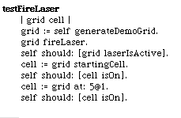 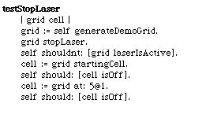If we run our unit tests we see that everything still passes. In this situation we're trying to reproduce a bug in a unit test. So that's not good enough. We need a test that fails.
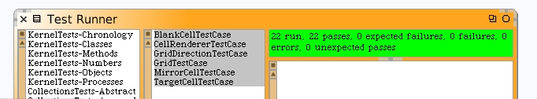The bug must be related to turning the laser beam on and then back off. Let's try this.
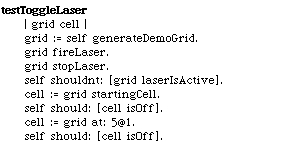When we run our test cases now, we get a failure. That's good news. We now have a unit test that reproduces a bug we are seeing on our GUI. This is also good because if we make an error in our coding at a later time, the unit test will catch this symptom.
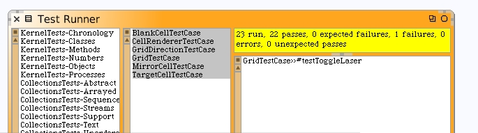When we open up the debugger we learn something new. The problem isn't specific to the target cell. Even the starting cell is not getting cleared.
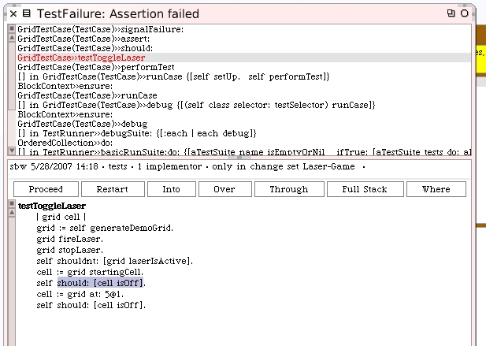A common technique is to use the debugger to "show us our bug". Click "restart" to restart our method from the top and then "over" a few times until we get to the code that's about to stop the laser beam.
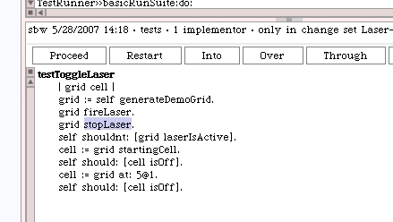Click "into" and "over" until we are about to execute the code that's supposed to clear our cell states.
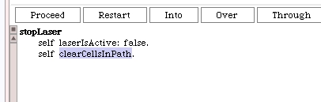Keep stepping into the code until you see the problem.
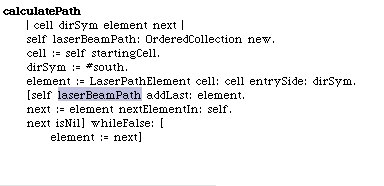The clear cells in path method works "as written". We build a correct path but then never clear the cells in it. Let's remedy that problem. Close the debugger.
The #activateCellsInPath method from our Grid class is our template for what we need to do.
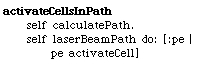Looks like we need a #clearCell method on our LaserPathElement class. Look at the #activateCell method.
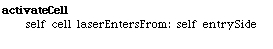This leads us to needing to write a #clearCell method on Cell. We can just use the initialization technique to "reset" the cell segments. For the Cell class...
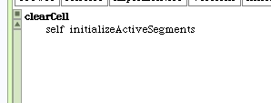For the LaserPathElement class...
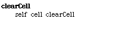And now the Grid class...
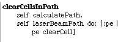Our unit tests now pass once again. We should see expected results on our morph too.
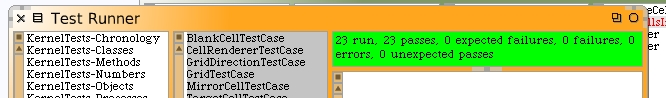 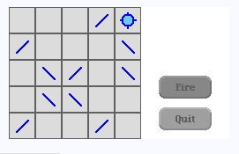Now would be a good time to save your Squeak image again.